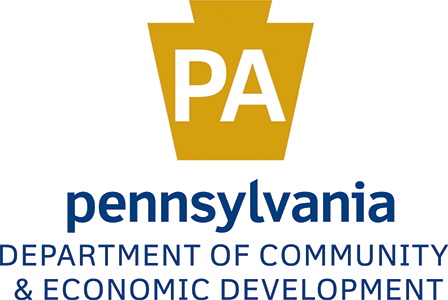
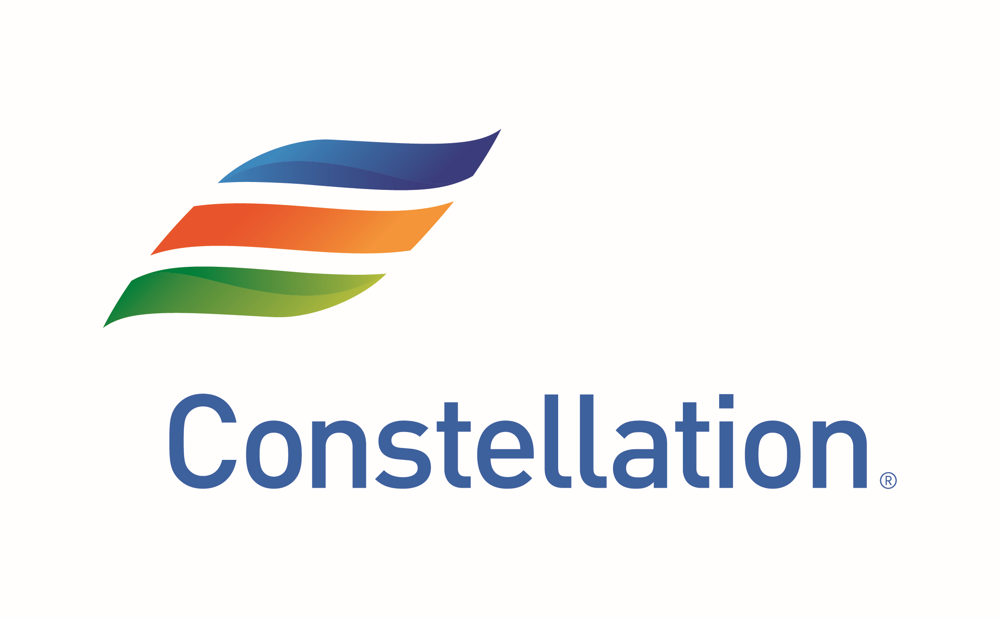
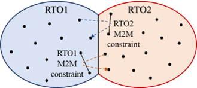

We Appreciate Support from Our Sponsors
Federal


State, Foundations, and Industry





Selected Projects
PACER: Predictive and Adaptive Market-to-market Coordination for Efficient Congestion Relief, Department of Energy, 2025-2027
|
 |
Team members: National Renewable Energy Lab, New Mexico State University
This project aims to develop a holistic market-to-market (M2M) coordination process modeling and analyzing platform that is built on existing M2M coordination best practice and work group at PJM-MISO.
Specifically, this project will systematically model and evaluate PJM/MISO’s state-of-the-practice M2M coordination and quantitatively identify worst-case M2M oscillations at PJM/MISO seams with different levels of electrification, VRE penetration, and extreme weather conditions.
Moreover, the project team will conduct testing, deployment, and demonstration of the proposed findings under real-world PJM/MISO M2M settings to facilitate adoption of developed products out of this project into the state-of-the-practice M2M coordination schemes.
The proposed PACER project is designed as a bottom-up, holistic framework that provides the much-needed tools that are 1) built on the best existing industry practice (e.g., MISO-SPP) and strong previous work, 2) customized to analytically study technical gaps and opportunities in current PJM-MISO scheme,
and 3) integrative to incorporate proof-of-concept case studies of advanced techniques with real-world RTO settings. The project team will carry analytical studies to identify potential gaps and impacts related to M2M oscillation under the existing PJM/MISO JOA and propose best practices and mitigation
plans in terms of real-time M2M energy-plus-reserve deployment flow coordination methods.
|
CAREER: Redesign of Ancillary Services via Aggregation and Disaggregation of Information, Flexibility, and Capability, National Science Foundation, 2023-2027
 |
Uncertainties by fast-growing penetration of distributed energy resources, proliferation of electrified transportation, and climate change intertwine and amplify challenges posed on power system reliability. Consequently, widespread and prolonged outages have been occurring increasingly more frequently and severely.
Recent outages, such as the 2021 winter Texas blackout and the 2022 summer Ohio outages, illustrate that conventional ancillary services are ineffective and inadequate to address imminent reliability challenges. Collaborating with regional transmission organizations, this project aims to fundamentally redesigns the
conventional scheme of energy-ancillary service co-optimization with system-wide requirements (i.e., a resource planning-based problem) into a novel capacity-flexibility co-dispatch framework with nodal demand/capacity/flexibility composite models (i.e., a real-time control-based problem).
First, flexibility provided by both distributed energy resources and electrified transportation is mathematically modeled and effectively aggregated Second, the proposed nodal-level co-dispatch and redispatch is granular, rigorous, and effective since the control policies are established as theoretical co-optimization problems, converted through transformations and information aggregation, and effectively solved both precisely with guaranteed performance and approximately using real-world
T&D system data Finally, the proposed granular control is also cost-aware with multi-scale, multi-domain cost and price models explicitly incorporated in the modeling process
|
Unifying and Securing Naval SCADA Networks through Scalable SDN, Office of Naval Research, 2021-2024
|
|
Team members: Penn State University
Enabled by the fast development of digital and communication technologies, the scale, capability, and complexity of modern shipboard SCADA systems are ever-increasing:
Scalability: Complexity of the SCADA architecture increases with the number of components (e.g., servers, master stations, and remote units), amount of data exchange with firewalls, and added features (e.g., control rules, communication protocols, and user interfaces) Compatibility: Most commercial-off-the-shelf (COTS) technologies, such as vendor-specific components, software, and protocols, are proprietary and probably even exclusive Resiliency: Navy vessels are expected to withstand the loss of some (possibly critical) subsystems, quickly respond and reorganize, and maintain maximum combat capability Security: SCADA networks are intrinsically vulnerable due to their interconnected and automated nature.
This project aimed at designing and utilizing novel, open, and scalable SDN techniques to enhance the resiliency/survivability, scalability/compatibility, and security of naval SCADA networks. Together with Penn State University, the project team also successfully carried out engaging, mentoring, and training both undergraduate and graduate students with desired skills and hands-on experience on naval applications.
|
|